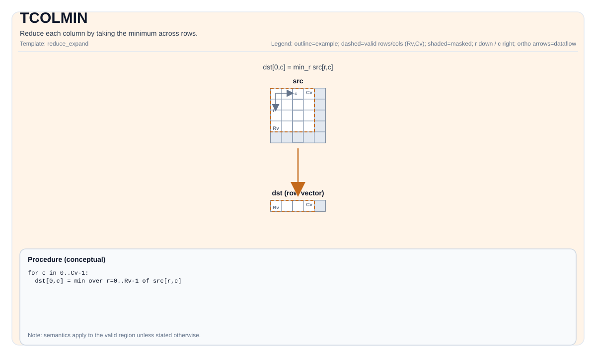

TCOLMIN¶
指令示意图¶

简介¶
通过取行间最小值来归约每一列。
数学语义¶
设 R = src.GetValidRow()，C = src.GetValidCol()。对 0 <= j < C：
\[ \mathrm{dst}_{0,j} = \min_{0 \le i < R} \mathrm{src}_{i,j} \]
汇编语法¶
PTO-AS 形式：参见 PTO-AS 规范。
同步形式：
%dst = tcolmin %src : !pto.tile<...> -> !pto.tile<...>
AS Level 1（SSA）¶
%dst = pto.tcolmin %src : !pto.tile<...> -> !pto.tile<...>
AS Level 2（DPS）¶
pto.tcolmin ins(%src : !pto.tile_buf<...>) outs(%dst : !pto.tile_buf<...>)
C++ 内建接口¶
声明于 include/pto/common/pto_instr.hpp：
template <typename TileDataOut, typename TileDataIn, typename... WaitEvents>
PTO_INST RecordEvent TCOLMIN(TileDataOut &dst, TileDataIn &src, WaitEvents &... events);
约束¶
通用约束或检查¶
dst和src必须为TileType::Vec。dst和src必须使用标准 ND 布局：行主且非分形（BLayout::RowMajor、SLayout::NoneBox）。dst和src的元素类型必须一致。- 运行时检查：
src.GetValidCol() == dst.GetValidCol()- 若
src.GetValidRow() == 0或src.GetValidCol() == 0，实现会直接返回。
A2A3 实现检查¶
- 支持的元素类型：
half、float、int16_t、int32_t。
A5 实现检查¶
- 支持的元素类型：
half、float、int8_t、uint8_t、int16_t、uint16_t、int32_t、uint32_t、bfloat16_t。
示例¶
自动（Auto）¶
#include <pto/pto-inst.hpp>
using namespace pto;
void example_auto() {
using SrcT = Tile<TileType::Vec, float, 16, 16>;
using DstT = Tile<TileType::Vec, float, 1, 16>;
SrcT src;
DstT dst;
TCOLMIN(dst, src);
}
手动（Manual）¶
#include <pto/pto-inst.hpp>
using namespace pto;
void example_manual() {
using SrcT = Tile<TileType::Vec, float, 16, 16>;
using DstT = Tile<TileType::Vec, float, 1, 16>;
SrcT src;
DstT dst;
TASSIGN(src, 0x1000);
TASSIGN(dst, 0x2000);
TCOLMIN(dst, src);
}
汇编示例（ASM）¶
自动模式¶
# 自动模式：由编译器/运行时负责资源放置与调度。
%dst = pto.tcolmin %src : !pto.tile<...> -> !pto.tile<...>
手动模式¶
# 手动模式：先显式绑定资源，再发射指令。
# 可选（当该指令包含 tile 操作数时）：
# pto.tassign %arg0, @tile(0x1000)
# pto.tassign %arg1, @tile(0x2000)
%dst = pto.tcolmin %src : !pto.tile<...> -> !pto.tile<...>
PTO 汇编形式¶
%dst = tcolmin %src : !pto.tile<...> -> !pto.tile<...>
# AS Level 2 (DPS)
pto.tcolmin ins(%src : !pto.tile_buf<...>) outs(%dst : !pto.tile_buf<...>)